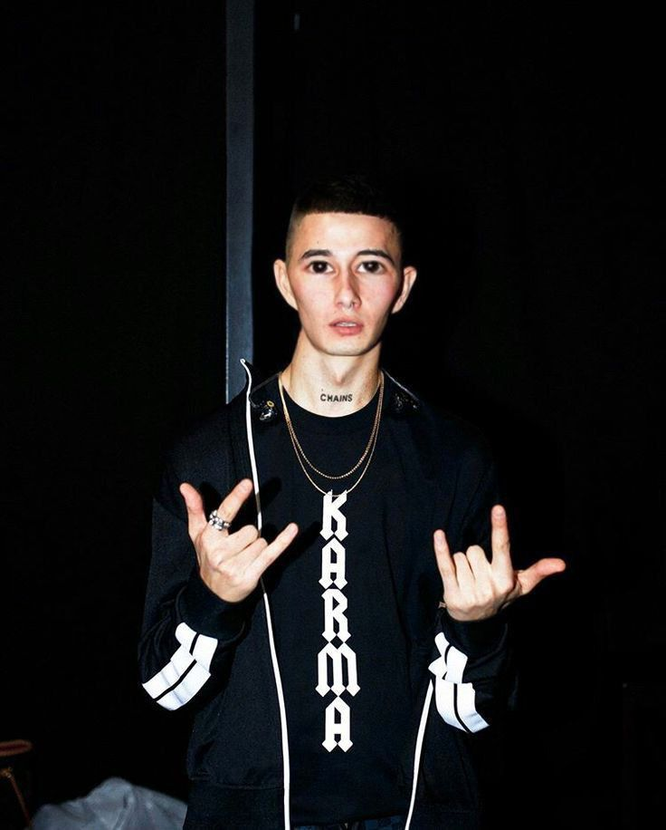

Личный сайт студента МГИМО

Добрый день. Меня зовут Найдич Руслан. Я - начинающий программист. Я совсем недавно встал на этот путь, но уже успел написать свой первый сайт.
В этом мне помог сайт Заярного Андрея Александровича:Учисьдома.рф
На этом сайте вы сможете познакомится с сайтами которые я написал:
Главная Тест Угадай число Клавиатурный тренажер